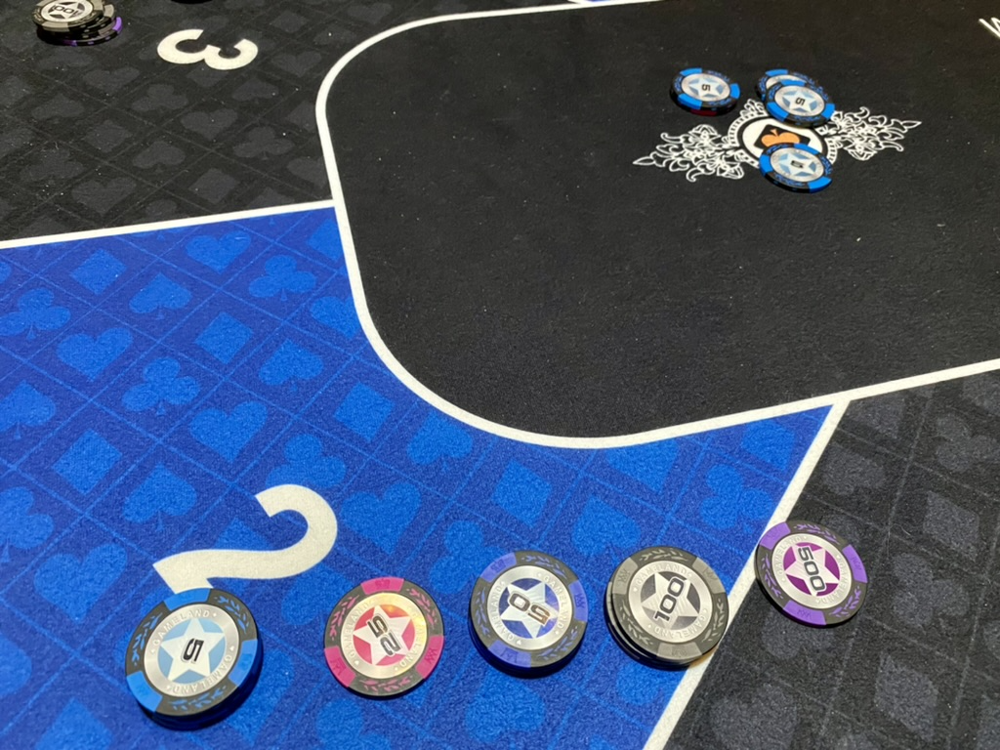
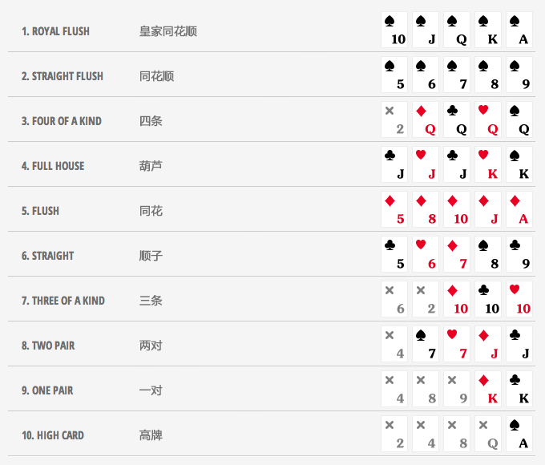
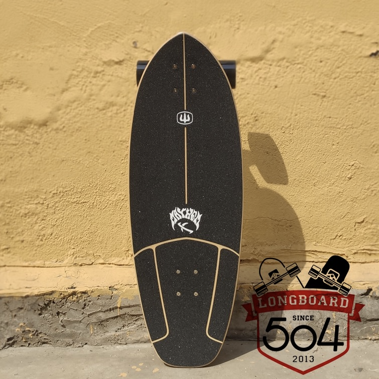
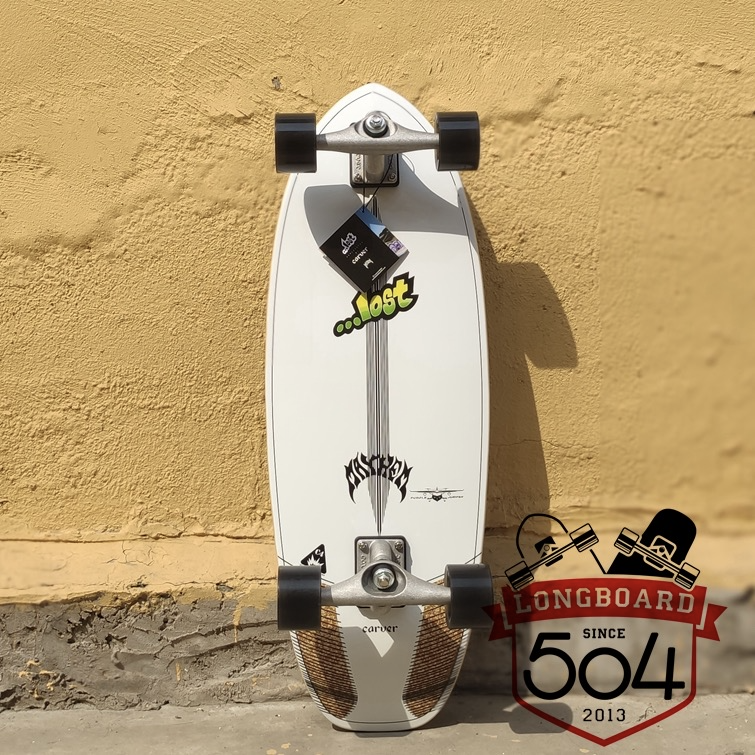
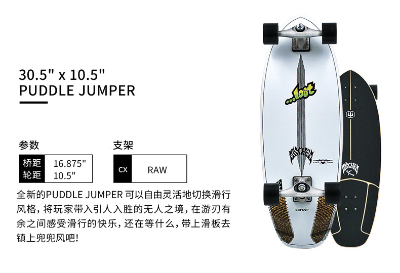

最近一个月解锁了两个新技能，一个是在几周前团建的时候学会了德州扑克，另一个是今天利用两个小时入门了陆冲板。虽然这两个目前还都是新手级别，但是比起之前只是看一些介绍、教程，通过实践来学习进步的速度可快太多了。
德州扑克

上上周的周五下午小组团建，吃了个西餐之后去了一个轰趴馆，有打台球的，有打麻将的。一开始我无所事事，后来有同事叫我打德州，因为我只听说过但从来没玩过，所以一开始说自己不会，就不参与了。后来在几个同事的鼓励下坐在了牌桌前，把规则给我讲了下，并且发给我一张图片，告诉我按照图里的规则判断自己手牌的大小就可以了。

我把图片保存到手机上，时不时看一下自己的牌有没有和这些规则对应上。因为之前玩过炸金花，所以不一会就了解规则了，但是各种套路和黑话还是不太懂，包括什么时候可以看牌什么时候可以跳过也需要问下其他人，有时候还需要让其他人帮忙算一下钱之类的。
这次学习德州扑克是实打实的用钱学习的，大家初金都是 200 块钱，没想到我在新手光环的照耀下不仅没有输钱，最后还赚了 150 多。
陆地冲浪板
因为从家到地铁站、下地铁后再到公司，这两段路程都比较远，从家到地铁可以骑自己的自行车，但是公司那边地铁站下车后通常骑不上车，所以就萌生了用滑板当代步工具的想法。
之前网上查了一些资料，一心想学习双翘，找了个家附近的滑板俱乐部，预约了今天的体验课，老师问我的学习目的，我说简单、能代步就可以。教练给我推荐陆地冲浪板（简称陆冲）。对于我不了解的领域，我是很相信专业和权威的，所以听了教练的话体验了一节陆冲课。
陆冲适合平时代步，它的轮子比较大，更适合在马路上使用，而且相对来说比较容易入门，学会后还能体验到冲浪的乐趣（这也是它名字的由来）。
一节课体验课结束后，感觉很有意思，而且这东西确实看起来容易，到自己滑的时候相当困难，加上陆冲板还可以来回扭动，刚开始上板平衡都很难掌握。为了更深入地学习，我报了 10 节一对一课程，一节 399，还买一块属于自己的板子。板子的话我也一步到位，买的应该是陆冲板中最好的牌子 Caver，虽然价格并不是最高的，但这块板子颜值深得我意，如下图：



这块板长度是 30.5 寸，大概是 6 斤多重，比起其他款式稍微宽一点，所以看起来很大气，售价 2200 软妹币。我还差一套护具没买，训练的时候用的店里的，准备自己从网上买一套，加上头盔大概又是 700 左右的花销。好不容易能有个爱好，该省省该花花吧。
肯定有朋友会说我这钱花的不值，陆冲板这么简单靠自学就够了，但我的想法是随着年龄越来越大，我们应该尽可能用更高的效率去学习，不能再花太多时间自己琢磨了，请个教练可以少走弯路，自己跟着视频练习的话根本不知道哪个姿势不对、哪里应该注意，也不知道应该加强练习哪些内容，而且容易受伤。这和软件开发时常用的空间换时间一个道理，我这算是拿钱换时间了，我几年前学习游泳也是报了 10 节私教课，学完后可以用基本标准的姿势蛙泳了，虽然很久没有游泳了，但那些注意事项我还是记得，再游的话很快就能找到感觉。
10 节课周六日各上一节，估计一个多月就能学完，再加上平时的练习，到时候我应该就能达到刷街的级别了。
作为报课的优惠，教练赠送了我一节课，所以买完板后我又上了正式的第一节课，今天一共学了两个小时，最后，再欣赏一下我的滑板初体验的视频吧。
这个视频是教练一手打着绷带，另一手拿着手机，脚下踩着滑板拍出来的，完整视频比较长我剪了其中十来秒出来，可以看出镜头运的很好。我准备最后一节课让教练帮我拍一组酷酷的视频作为结果汇报的材料。
P.S. 昨天去检查甲功，今天结果出来指标正常了，喝个酒庆祝下，干杯🍻

这个泰山原浆啤酒很好喝，口感非常好，而且很鲜，强烈推荐。